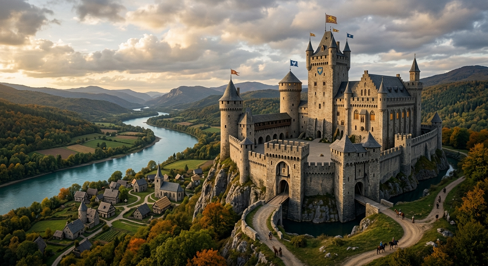

Meu primeiro post
Por: Davi Siqueira Silva
Aqui você vai ver um ranking dos 4 castelos históricos e arquitetónicos mais bonitos do mundo.

Por: Davi Siqueira Silva
• Onde fica: Schwangau, Baviera (Alemanha)
• Por que é destaque: Construído no século XIX pelo rei Luís II, parece saído diretamente de um conto de fadas. Suas torres brancas e picos cercados por montanhas inspiraram o famoso Castelo da Cinderela, da Disney.
Clique aqui para visitar o siteOnde fica: Vale do Loire (França)
Por que é famoso: É o maior castelo do Vale do Loire, um dos maiores exemplos da arquitetura renascentista francesa e famoso por sua escadaria dupla central.
"https://casavogue.globo.com/LazerCultura/noticia/2012/06/top-10-os-mais-belos-castelos-do-mundo.html"Onde fica: Segóvia (Espanha)
Por que é famoso: Construído sobre um penhasco rochoso com formato que lembra a proa de um navio, serviu de inspiração para contos de fadas e fortificações medievais.
"https://forbes.com.br/forbes-life/2025/02/10-castelos-na-europa-que-parecem-saidos-de-um-conto-de-fadas"Onde fica: Normandia (França)
"https://www.cvc.com.br/dicas-de-viagem/inspiracoes/historia-e-cultura/castelos/"